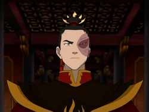

The Fire Nation is one of the world's four nations and five sovereign states.
It is an absolute monarchy led by the Fire Lord and home to most of the world's
firebenders. The rest of the world's firebenders live in the Earth Kingdom.
The nation is geographically located along the globe's equator in
the western hemisphere and consists of several islands. Its capital is simply
known as the Fire Nation Capital. It is the second-largest nation by area after
the Earth Kingdom. The Fire Nation has the most powerful economy in the world.
This was thanks to its strong industrial sector and extensive technological
developments which also allowed it to create an extremely powerful military,
and also initiated global modernization and globalization.
Culture
Fire Temple - where Avatar Roku studied
The Fire Nation's dress code is organically model are fire and their elemental
color is red. Most of its architecture is made of stone and have red pagoda-style
roofs. Like the Earth Kingdom, the Fire Nation emblem is usually put on important
or beautiful buildings for decoration. It is also not unusual for an image of the
Fire Lord to be placed in a prominent, visible place.
The Fire Nation oath was authorized by Fire Lord Sozin at the beginning of the war.
It is called "The March to Civilization" and is important cultural element. This is
demonstrated by the fact that it is taught to school children with demureness and
recited with purpose. Another interesting aspect of Fire Nation is the role of its
women. Fire Nation women are more free than women in the other nations. They can
even, and are sometimes encouraged, to join the police force and the domestic force.
Techniques
Firebending moves
Firebending is defined as the pyrokinetic ability to control fire. Firebending is unique because it is
the only one in which the practitioner can generate the element. Fire is the element of power, and
consists of an overpowering force tempered by the fearless determination to accomplish tasks and desires.
During the war, the a militaristic Fire Nation manipulated firebending into being drived by rage, hatred,
and anger. Morevover, firebending's power comes from the sun and the first firebenders learn from dragons.
Firebending is also known for its intense and aggressive attacking style and general lack of adequate defensive
moves; however, firebenders can modify their offensive maneuvers to function as a defense, such as creating large
walls of fire or shooting down incoming attacks with fire jabs.
War

Fire Lord Zuko
The military of the Fire Nation began an imperialistic 100 -year war
with the other three nations that lasted from 0 to 100 AG. During this
time, the Fire Nation nearly massacred all of the Air Nomads, overtook
vast stretches of the Earth Kingdom, and conducted raids on the waterbenders
of the Southern Water Tribe except for one bender, Katara. Prince Zuko became
the Fire Lord after the war and used his nation's resources to help rebuild the world.